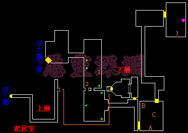

|
惡靈古堡～惡靈古堡４----地圖攻略～3-4
|
|
攻略內容以Normal為主，地圖上的紫色圓點●表示高價寶物的位置 ，標綠色的道具則是過關必須的重要道具。
在大廳開始時，就會聽到Ashley掙扎的聲音，只要走到正面一看，Ashley就會向Leon求救，此處需要用到來福槍，沒有來福槍就回頭 找武器商人購買，子彈的話，擊碎大廳的花瓶可以找到，正中央Saddler的畫像後面有5000ptas。解救Ashley時，只要將困住Ashley的三 個鐵條射斷即可，成功之後，突然出現一批邪教徒，分別從左右兩邊的門出來，要抓走Ashley，Ashley會原地蹲下，一定要將這些邪 教徒全部打倒，如果Ashley被抓，只要在邪教徒步出大廳前打倒即可。
第一批邪教徒解決後，Ashley會嘗試去打開門但是失敗，這時第二批由紅衣邪教徒首領帶領的邪教徒出現了，Ashley會回到原本的位 置蹲下，由於第二批中有持弓箭的邪教徒，最好移動一下位置，靠旁邊一點，打倒邪教徒首領，並清空所有邪教徒，Ashley自動會 去撿起邪教徒首領掉落的鑰匙，離開大廳。
 Ashley完全沒有武器，行動起來要特別小心。從大廳下層離開之後，首先到的房間除了有打字機外，還可以找到黃色藥草；再往前 走，出現一個邪教徒，而且發現繼續前進的路被鐵柵門擋住了，如果要打開這個鐵柵門，則要操作編號1的把手，圖片中綠色的圓 點代表著油燈的位置，Ashley可以利用油燈來攻擊，不過距離要計算好；這裡要掌握一個要領，邪教徒不會爬，所以Ashley要善加利 用爬過桌子的方式引誘邪教徒。除了打開鐵柵門之外，也有另一個比較簡單的選擇，就是從編號2的地方爬過去。 來到第二個房間，同樣有一個邪教徒和鐵柵門，如果第一個房間是用打開鐵柵門方式過來的玩家，可以操作第一道柵門旁邊的把手 把柵門重新關上。第二道柵門沒有捷徑可走了，控制柵門的把手就在柵門的兩側，一開始先操作離邪教徒較遠的把手，可以在不觸 動邪教徒的情況下打開，另一個把手看完家是否要選擇硬碰硬，不理會邪教徒，這樣的話會被攻擊0~1次，門就會順利打開；否則 ，就利用房間裡的三個油燈進行攻擊。打開柵門的時候，只要開啟Ashley足以通過的空間即可。 到長廊底部的房間，推開置物櫃，後方有一個按鈕，地圖上將它編號為A按紐，除此之外，對照地圖，還有B、C兩個按鈕， 只要按 照A→B→C→A的順序操作按鈕，即可通過這個房間，在C按鈕附近有四角石板，記得要拿。 通過幽暗的走廊到達一個放置著鎧甲士兵的房間，房間中央有個拼圖，剛才拿到的四角石板正是拼圖的右下角，要把它裝上去的話 ，要先把拼圖完成，拼圖的全形請參考前方的石門，拼完後裝上四角石板，石門就會打開。
裡面有個高價寶物金の腕輪（金的手環），調查完後最後再去拿編號3處的Salazar的家徽，取下後鎧甲會往後轉，並關上門，在鎧甲 後面取得蛇的物件，門開啟。 此時門外的那三個鎧甲士兵突然動了起來，朝Ashley攻擊過來，先在原地等一下，引誘他們過來後繞過桌子逃出。現在的目的地是 起居室下層，回頭的這一段路有三個鎧甲士兵會攻擊，只要按照指示按下複合按鍵即可。 之前和兩個邪教徒纏鬥的房間現在已經很安全了，可以回去拿拿道具、四處逛逛，往起居室下層。 起居室下層有 File 管家的手記。將Salazar的家徽放入起居室下層的圓型推台上，打開通往上層的樓梯的門，起居室上層的盡頭有些 金錢，然後往大廳方向去跟Leon會合吧。
疑難解答
除此之外，到了4-1時，Leon也無法再走一次Ashley走過的路，這是對Ashley的信任嗎？
；Ashley使用，增加一格最大值。當已經開啟所有格數之後，就無法再增加。與Leon相比，Ashley受到攻擊的情況 其實不多，所以黃色藥草的使用，應該以Leon為主。 只要不放過任何一個黃色藥草，一輪遊戲下來，Leon和Ashley 的生命值，都可以加到最高。 未經許可禁止轉載連結 |
惡靈深淵Biohazard Abyss http://98.to/coolbio